Les outils Aventurier
Ce que vous avez sous les yeux, zone par zone.
La fiche
À gauche, tout ce qui définit votre aventurier. En haut, le portrait (un clic pour choisir une image, puis la recadrer), le nom et la race.
Juste en dessous, les six statistiques : Force, Résistance, Charisme, Savoir, Dextérité et Perception. Le grand chiffre, c'est le nombre de dés que vous lancez. Il tient déjà compte des malus : une jambe cassée, une armure lourde… Le petit dé sous le chiffre lance le jet.
Enfin, le décompte : Points de Vie, de Charge, d'Action, d'Armure, de Tourment et d'Éveil. Les boutons − et + servent pendant la partie, quand on prend un coup ou qu'on se soigne.

Le corps
La silhouette au centre est vivante. Un clic sur une partie du corps la fracture, un second clic la soigne. Chaque zone touche une statistique : la tête la Perception, le torse la Résistance, les bras la Dextérité, les jambes la Force. La statistique est divisée par deux tant que la fracture est là.
Autour, deux arcs : Équipement à gauche (ce que vous tenez et portez) et Amélioration à droite (cybernétique, mutations, particularités). Un clic sur une icône ouvre sa description, avec « Utiliser » quand c'est possible.
Le bouton + en haut ajoute un effet : un bonus, un malus, un état. Chaque effet devient une petite bulle qui tourne doucement autour du personnage ; passez dessus pour la lire, la modifier ou la retirer.
L'inventaire
Les onglets du bord droit ouvrent les volets, un à la fois. L'Inventaire liste tout ce que vous transportez, avec le poids en haut (ici 0 / 5 PC). Pour chaque objet : la statistique qu'il utilise, le bonus de dés, le seuil, le poids.

Le + ouvre deux choix : le Catalogue (près de 200 objets prêts à l'emploi) ou Créer un objet sur mesure. Tout ce que vous créez part aussi dans le catalogue, pour vos autres personnages.
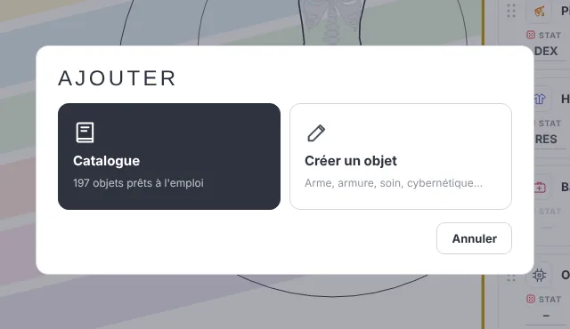
- Équiper : l'étiquette bleue (Rangée, Non portée…) choisit où va l'objet : main gauche, main droite, deux mains, corps. Une arme à deux mains occupe les deux poings.
- Lire la description : le petit (i) au bout de la ligne.
- Se débarrasser d'un objet : glissez-le sur le + qui devient une poubelle. Il reste au catalogue.
- Le mettre au coffre : pendant le glisser, l'icône du coffre apparaît à côté de la poubelle.
Les dés
Aldebaran se joue avec une poignée de D10. Chaque dé qui atteint le seuil (8 par défaut) est une réussite. Un 10 est un critique, un 1 un échec critique.
Le plus simple : cliquez sur le dé d'une statistique. Le bon nombre de dés part tout seul, et le résultat s'affiche en grand.

Pour un jet sur mesure (« lance 4 dés, seuil 7 »), ouvrez le volet Jet libre : nombre de dés, seuil, Lancer. Les derniers jets restent listés en dessous.
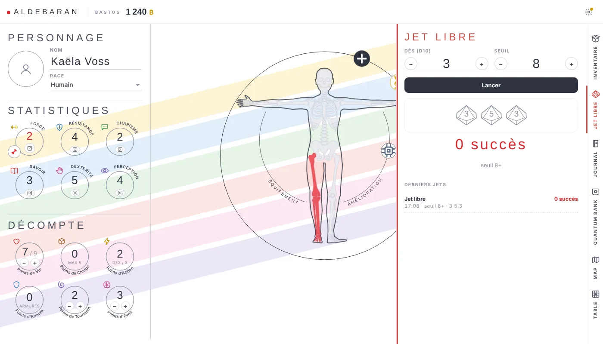
Journal, banque et carte
Le Journal garde vos notes de partie : un nom, un indice, une adresse. « Ajouter une entrée » et c'est noté.
La Quantum Bank sert de coffre-fort. On y dépose des Bastos (depuis le compteur de Bastos en haut, « Épargner ») et des objets qu'on ne veut pas porter : au coffre, ils ne pèsent plus rien. « Retirer » rend l'argent au portefeuille.
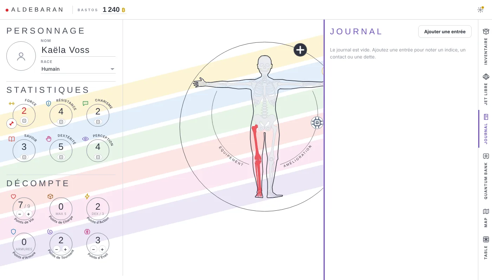
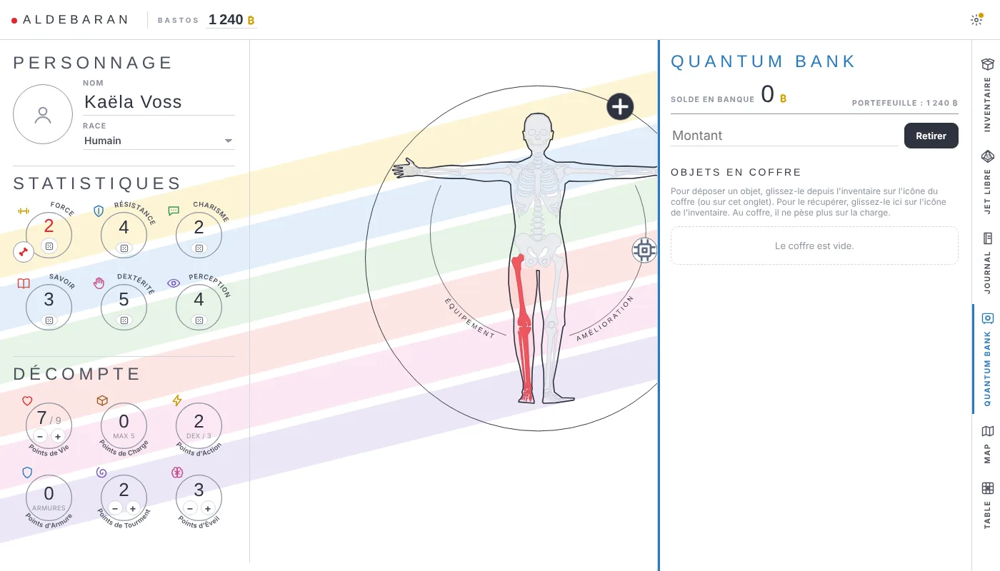
La Map ouvre la carte du monde d'Aldebaran, avec un lien pour la voir en plein écran.
La table
L'onglet Table vous relie au maître du destin. Tapez le code qu'il vous donne, « Rejoindre », et c'est tout : votre fiche lui est envoyée, et vous voyez le plateau.
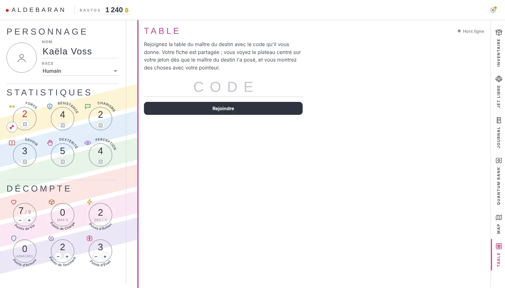
Une fois connecté, la caméra suit votre jeton. Tant que le maître du destin ne l'a pas posé sur la carte, vous voyez de la neige « NO SIGNAL » : c'est normal, il vous fait entrer en scène quand il le décide.

- Montrer quelque chose : cliquez ou glissez sur la carte, tout le monde voit votre pointeur, à votre couleur.
- Parler : le bouton rond en bas à droite envoie un petit message, qui s'affiche en bulle au-dessus de votre jeton.
- Pas de veille : le soleil dans l'en-tête empêche l'écran de s'éteindre pendant la partie (activé par défaut).
- Quitter : la croix.
Les options Aventurier
Les réglages, en haut à droite (la petite roue).
Sauvegarder son personnage
Votre fiche se garde dans un dossier de votre ordinateur : un fichier .adb par personnage, plus un catalogue commun pour vos objets. Choisissez le dossier une fois, puis Ctrl+S réécrit la fiche. Ctrl+Maj+S enregistre ailleurs ou sous un autre nom.
La sauvegarde automatique se règle dans les Paramètres (toutes les 30 s, 1 min…). Sur Firefox et Safari, qui ne savent pas écrire dans un dossier, la fiche se télécharge à la place.
Les autres réglages
- Empêcher la mise en veille de l'écran : pratique quand la fiche reste ouverte sur la table toute la soirée.
- Installer : Aldebaran devient une vraie appli, avec son icône, qui s'ouvre même sans Internet.
- Accueil : revenir au choix Aventurier / Maître du destin.
Sur téléphone
Tout marche aussi au téléphone. En portrait, la fiche se lit de haut en bas et les onglets restent sur le bord droit. Tournez-le en paysage pendant la partie : la table prend tout l'écran, avec une fiche express à gauche (PV et statistiques, un clic pour lancer).
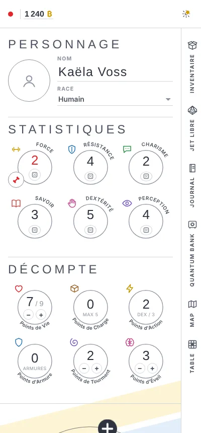

Ce que vous pouvez faire Aventurier
Quelques situations de jeu, pas à pas.
Créer un personnage en cinq minutes
- Donnez-lui un nom et choisissez sa race.
- Répartissez ses statistiques avec le maître du destin.
- Ajoutez un portrait (un clic sur le rond).
- Remplissez son sac depuis le Catalogue, et équipez son arme.
- Ctrl+S : choisissez un dossier, c'est enregistré.
Prendre un coup, se soigner
Le maître du destin peut changer vos PV de son côté : vous le voyez arriver sur votre fiche. Si on vous casse un bras, cliquez sur le bras : la Dextérité est divisée par deux, et un second clic la rend quand c'est soigné.
Ouvrir un coffre, prendre un objet
Sur la table, certains objets sont cachés dans un coffre. Cliquez dessus : une bulle « Ouvrir ? » apparaît. Ouvrez-le, l'objet sort en flottant dans un halo de lumière.

Cliquez ensuite sur l'objet puis Prendre : il file droit dans votre inventaire. Si votre sac est plein, l'objet tremble en rouge avec « Plus de place ». Faites de la place, ou passez par la Quantum Bank.
Se faire entendre à la table
Vos jets de dés s'affichent tout seuls en bulle au-dessus de votre jeton : l'icône du dé et votre nombre de réussites (le trophée), ou le pion quand c'est raté. Le maître du destin, lui, envoie des messages en haut de l'écran.
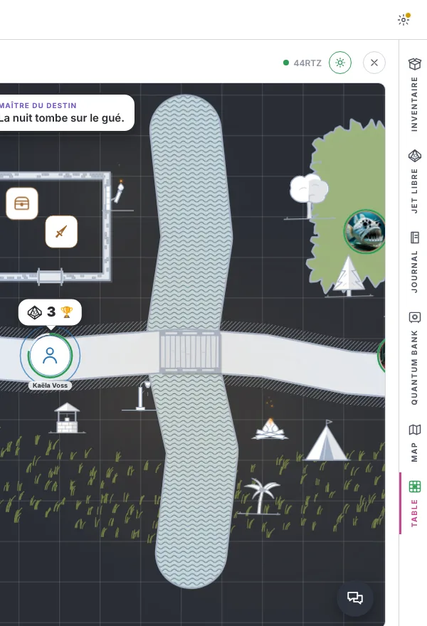
Les outils MJ
Le plateau au centre, les outils à gauche, la partie en bas.
Le plateau

Le plateau est infini. Une case de la grille vaut un mètre, la taille d'un jeton.
- Se déplacer : glisser dans le vide (ou clic molette). Au doigt, glisser à un doigt, pincer pour zoomer.
- Zoomer : la molette, vers le curseur. 0 recentre tout.
- Attirer l'attention : un clic droit sur la carte lance un signal rouge que tous les joueurs voient.
Dans la barre du haut : les flèches de scène et le bouton scénario à gauche ; à droite, annuler / rétablir, la table en ligne, la vue joueur (second écran), le plein écran et les paramètres.
Dessin D
Le premier outil du groupe CRÉA. Tout en haut : la Main (déplacer sans dessiner), la Mesure M, la Gomme, et « Tout effacer ». Juste dessous, la largeur du tracé, en mètres.

- Terrain : chemin (tracé libre ou en ligne droite, de 1 à 5 m), eau, feuillage, prairie, désert, plancher et murs. On peint à main levée ; les murs se posent clic par clic, un clic sur le dernier point les termine.
- Ouvertures : porte, porte secrète, escalier, pont. On les tire d'un bord à l'autre.
- Annotations : du texte et des flèches.
Plus bas, les pictos, rangés par famille : bâtiments, moderne, nature, architecture, lumières. Un clic pour choisir, un clic sur la carte pour poser. Ensuite, un picto se comporte comme un jeton : on le déplace, on l'agrandit, on le retire.
MOBs J
Trois onglets. Sur le plateau liste tout ce qui vit dans la scène (joueurs, PNJ, MOBs) avec leurs PV : un clic centre la carte dessus, l'œil le cache aux joueurs.
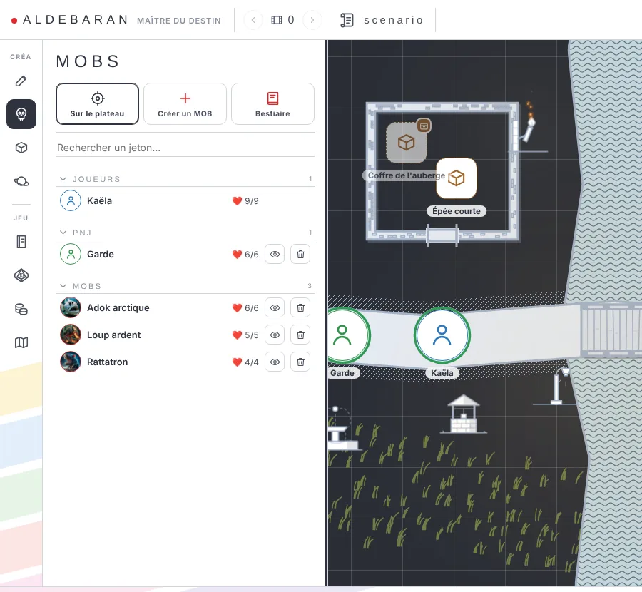
Le Bestiaire contient toutes les créatures du livre, rangées de la plus anodine à la plus terrible : Vermines ★☆☆☆☆Prédateurs ★★☆☆☆Colosses ★★★☆☆Béhémoths ★★★★☆Léviathans ★★★★★ Les chapitres se replient. Glissez une créature sur la carte pour l'invoquer.

Créer un MOB ouvre la fiche vierge : nom, image, statistiques, PV, attaques. « Enregistrer au bestiaire » le garde pour la prochaine fois.
La fiche d'un jeton
Un clic sur n'importe quel jeton ouvre sa petite fiche : les PV avec − et +, les statistiques (un clic lance les dés), les points, les notes. En haut, l'œil le cache aux joueurs, le crayon ouvre la fiche complète. En bas, la taille du jeton et « Retirer ».

Items I
Le même principe pour les objets. Sur le plateau : ce qui traîne dans la scène. Inventaire : tout le catalogue de l'appli joueur, plus les objets des fiches de vos joueurs, classés par famille. Glissez un objet sur la carte pour le déposer.
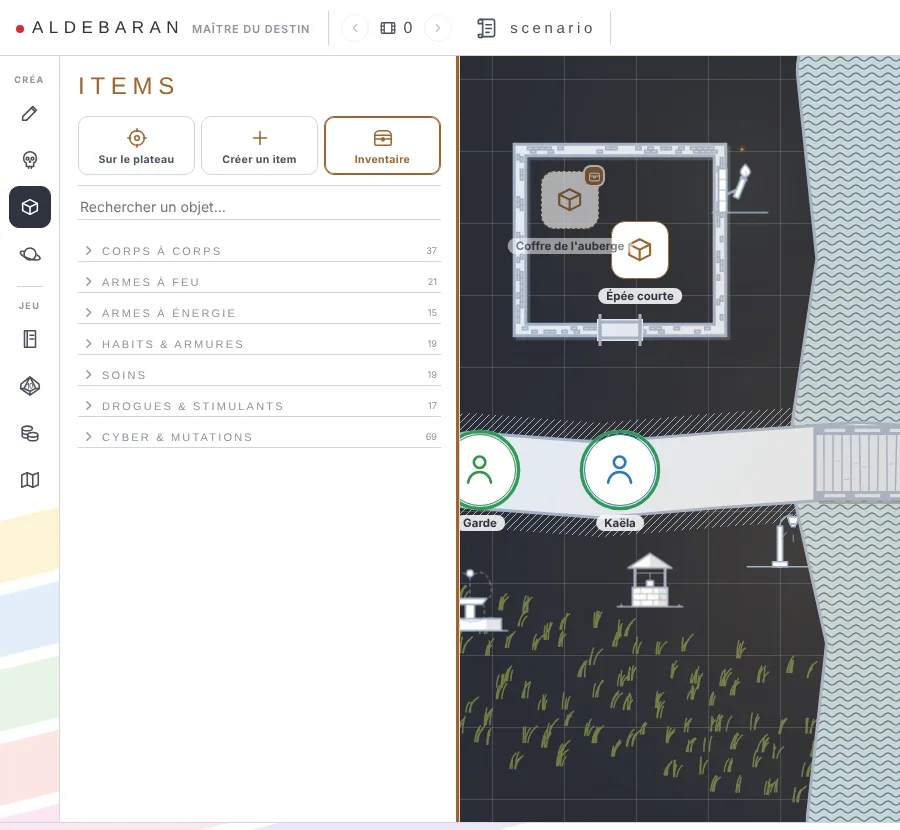
Créer un item : un nom, une icône, une taille, une description. La case Dans un contenant le transforme en coffre aux yeux des joueurs.

Fond de carte F
- Fond : couleur unie (le bleu-gris, idéal pour dessiner), parchemin, herbe, sable, terre.
- Ambiance : jour ou nuit (brouillard de guerre), beau temps, pluie, orage.
- Plateau : afficher la grille, recentrer.
- Image : une carte du catalogue, ou la vôtre (importée ou déposée dans le volet).
- Orthophoto : tapez un lieu réel, la vue aérienne devient votre carte, à l'échelle.
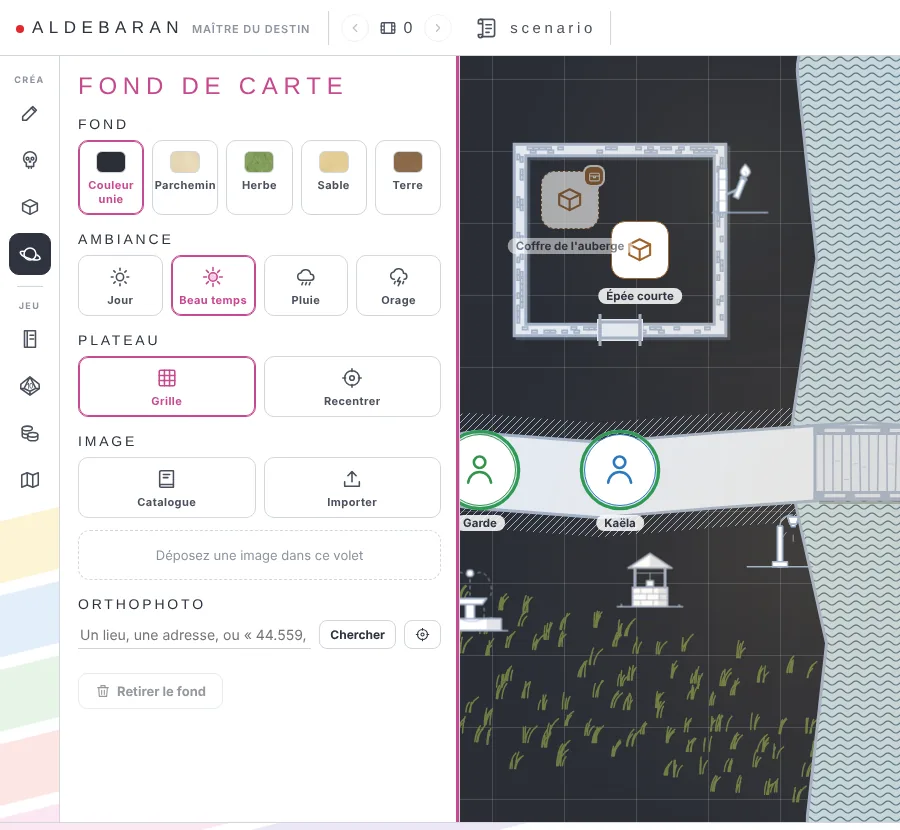
Le groupe JEU
Les outils de la partie elle-même :
- Notes MJ : votre carnet secret. Les joueurs ne le voient jamais.
- Jet libre : un jet rapide, nombre de dés et seuil.
- Butin : choisissez la richesse du lieu (désertique, pauvre, moyen, cossu, riche, blindé) puis Fouiller : dix lignes de trouvailles sortent d'un coup.
- Map : la carte du monde.
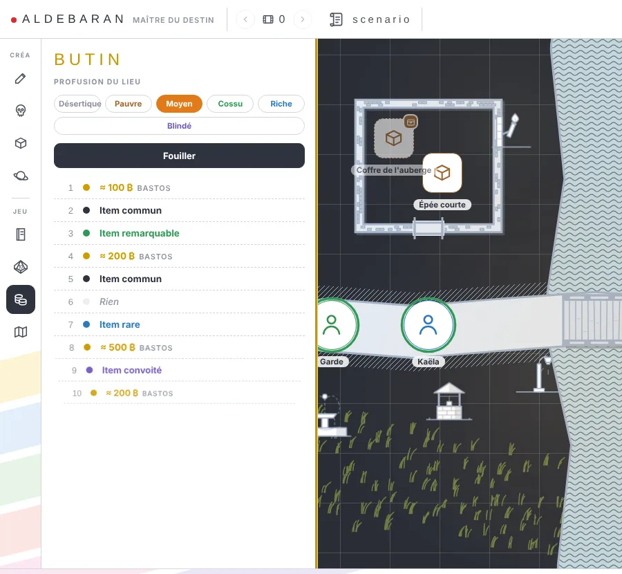
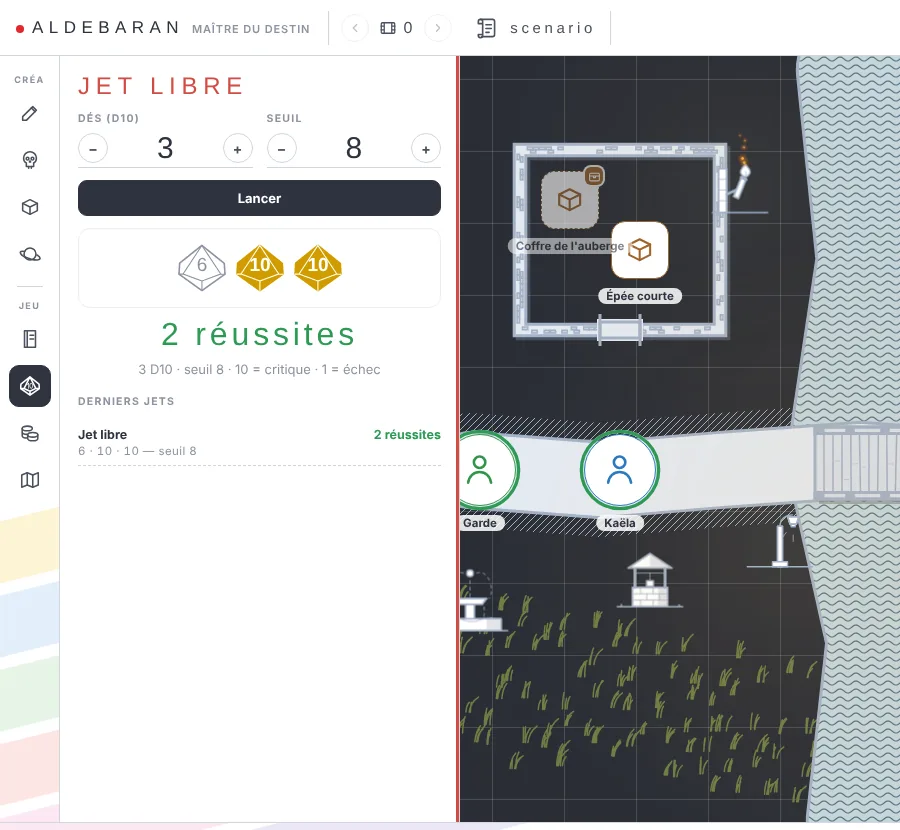
Message, sabliers, initiative
Le bandeau du bas, de haut en bas :
- Message système : tapez, Entrée, et la phrase s'affiche en haut de l'écran de tous les joueurs. Commencez par @nom pour l'envoyer à un seul joueur.
- Sabliers : un compte à rebours nommé (« renforts », « effondrement »…), visible de tous.
- Initiative : joueurs et MOBs y entrent dès qu'ils sont posés. Mélanger, puis Tour suivant Espace : le jeton actif est cerclé d'or. Glissez une pastille pour changer l'ordre.
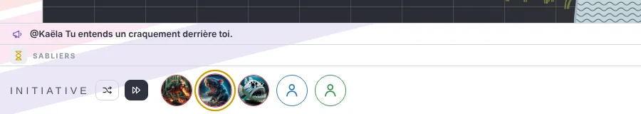
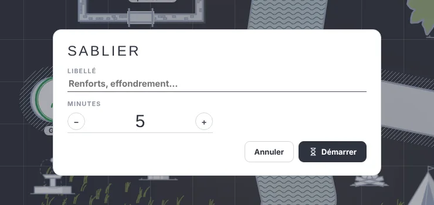
Le scénario
Le bouton scénario en haut ouvre la liste des scènes. Une scène retient tout : le fond, le jour ou la nuit, les tracés, les MOBs, les objets, les lumières, et même la position des joueurs. On passe de l'une à l'autre avec les flèches du haut ; le titre s'affiche chez les joueurs.

- Nouvelle scène : en partant de la carte actuelle, ou d'une page vierge.
- Le cadenas : une scène verrouillée est terminée. Vous pouvez vider le plateau, elle ne bougera plus. Un clic la déverrouille.
- PDF : tout le scénario s'exporte, pour l'imprimer ou le relire.
Les options MJ
Ce qui se règle une fois pour toutes.
Paramètres
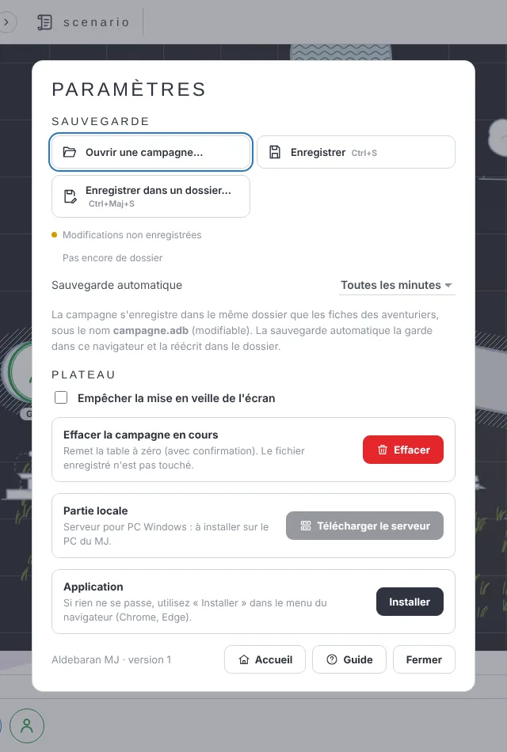
- Sauvegarde : votre campagne est un fichier campagne.adb, rangé dans le même dossier que les fiches de vos aventuriers. Ctrl+S l'enregistre ; « Ouvrir une campagne… » liste celles du dossier. La sauvegarde automatique se règle juste dessous.
- Empêcher la mise en veille de l'écran.
- Partie locale : le petit serveur pour jouer sur le même wifi, voir Jouer ensemble.
- Installer l'appli, et effacer la campagne en cours (le fichier enregistré n'est pas touché).
Raccourcis clavier
Sur tablette
La table s'adapte au doigt : boutons plus grands, barres flottantes. Glissez à un doigt pour vous déplacer, pincez pour zoomer.
Ce que vous pouvez faire MJ
Des recettes pour vos prochaines séances.
Dessiner une carte en cinq minutes
- D pour le Dessin. Choisissez Eau, largeur 2 m, et tracez une rivière d'un geste.
- Chemin libre pour la route, puis Pont tiré d'une rive à l'autre.
- Mur, clic par clic, pour une maison ; une Porte sur un des murs.
- Feuillage en quelques coups de pinceau pour une forêt, puis des arbres dans les pictos.
- Quelques pictos pour la vie : un puits, une tente, un moulin. Échap, c'est prêt.
Un raté ? Ctrl+Z, ou la flèche « annuler » en haut.
Cacher un trésor dans un coffre
Dans Items, créez (ou glissez depuis l'inventaire) l'objet à cacher, et cochez Dans un contenant. Vous, vous voyez l'objet ; vos joueurs, eux, ne voient qu'un coffre. Quand l'un d'eux l'ouvre, vous êtes prévenu, et l'objet apparaît pour tout le monde. S'il le prend, il disparaît de la carte et rejoint son inventaire.
Une scène de nuit
Dans Fond de carte, passez en Nuit : le brouillard de guerre couvre tout, sauf autour des joueurs et des sources de lumière. Vous, vous voyez à travers. Un MOB hors de la lumière devient un « ? » dans l'initiative des joueurs.

Les pictos de la famille Lumières éclairent : torche, brasero, feu de camp, lanterne, lampadaire, phare… Un clic dessus pour les régler : Allumé / Éteint / Cassé (il clignote), la couleur, la taille du halo. Le phare, lui, balaie la nuit d'un faisceau tournant.

Mener un combat
- Glissez les MOBs du bestiaire sur la carte : ils entrent dans l'initiative.
- Mélanger, puis Espace à chaque tour.
- Les jets des joueurs s'affichent en bulle au-dessus de leur jeton ; pour un MOB, un clic sur sa statistique dans sa fiche.
- Les PV se règlent dans la fiche du jeton ; pour un joueur, ils reviennent sur sa fiche.
- Besoin de tension ? Un sablier de 3 minutes avant l'arrivée des renforts.
Un deuxième écran pour la table
Le bouton vue joueur ouvre une seconde fenêtre à glisser sur la télé ou un second écran. Elle suit la caméra, les jetons, les tracés et le brouillard, sans vos outils ni vos secrets.
En ligne À distance
Ouvrir la table
Côté maître du destin : le bouton table en ligne en haut à droite, puis « Ouvrir la table ». Un code de 5 lettres s'affiche, le même d'une séance à l'autre, avec un lien et un QR code à partager.
Côté joueur : onglet Table de la fiche, le code, « Rejoindre ». Ou plus simple : cliquer le lien, scanner le QR code.

Accueillir les joueurs
Chaque joueur connecté apparaît dans un onglet au-dessus du bandeau bas, avec son portrait. Son jeton n'arrive pas tout seul sur la carte : glissez-le depuis l'onglet à l'endroit voulu. C'est vous qui décidez quand il entre en scène.

Un clic sur l'onglet ouvre sa fiche, à jour en direct, en lecture seule : seul le joueur la modifie.
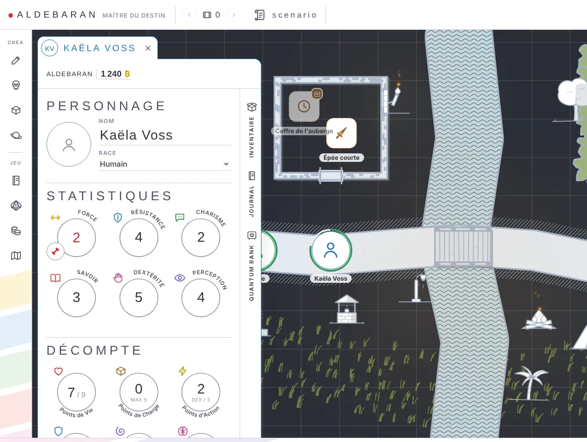
Si un joueur perd sa connexion, l'appli le reconnecte d'elle-même, sans limite. S'il part vraiment, son onglet disparaît au bout de quelques secondes.
Partie locale Même wifi
Tout le monde autour de la même table ? Le petit serveur rend la connexion instantanée et indépendante d'Internet.
Installer le serveur (PC du MJ, une fois)
- Paramètres › Partie locale › Télécharger le serveur. Réservé au PC Windows du maître du destin ; les joueurs n'installent rien.
- Lancez Aldebaran-Serveur.exe. La première fois, Windows prévient qu'il ne connaît pas ce programme : « Informations complémentaires », puis « Exécuter quand même ».
- Le pare-feu demande l'accès au réseau : cochez Réseaux privés et autorisez.
- L'icône Aldebaran apparaît près de l'horloge, et la table s'ouvre dans le navigateur. S'il demande l'accès aux appareils du réseau local, répondez Autoriser.
Chaque soirée
Lancez le serveur, ouvrez la table comme d'habitude. La fenêtre de la table affiche alors une section Partie locale avec un QR code : vos joueurs le scannent, et ils sont à la table. Pas de code à taper, pas d'attente. S'ils scannent avant que la table soit ouverte, ils patientent tout seuls.
Le menu de l'icône (près de l'horloge) affiche l'adresse et le nombre de joueurs connectés, et permet d'arrêter le serveur.
- Le PC ne se met pas en veille tant que le serveur tourne.
- Si le serveur est coupé puis relancé, tout le monde se reconnecte tout seul.
- Les joueurs à distance peuvent toujours rejoindre avec le code, en même temps.